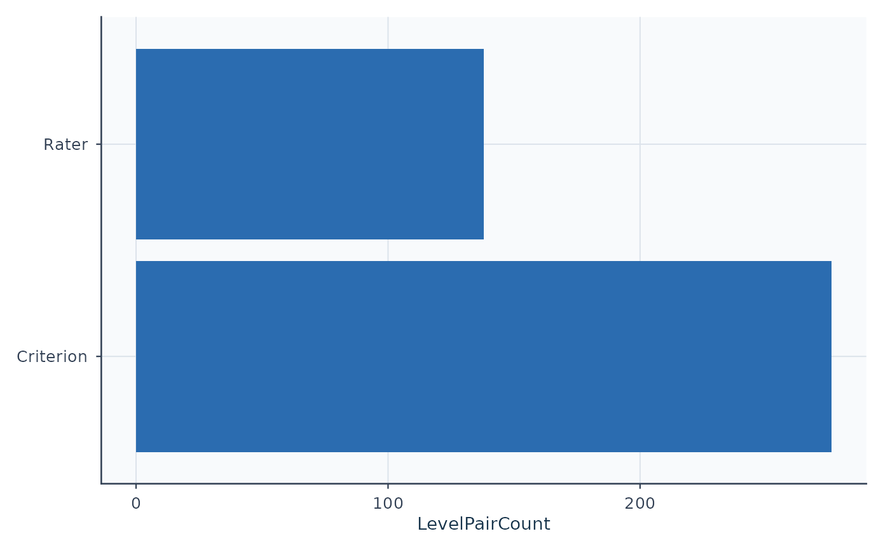
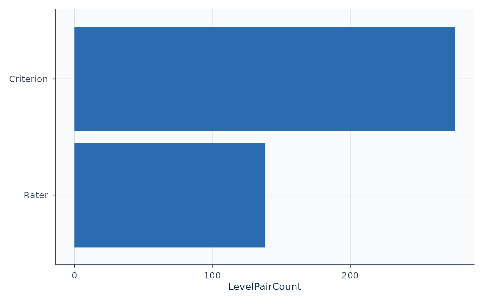

Plot strict pairwise local-dependence follow-up with ggplot2
Source:R/api-plotting.R
plot_marginal_pairwise.RdPlot strict pairwise local-dependence follow-up with ggplot2
Arguments
- x
Output from
fit_mfrm()ordiagnose_mfrm().- diagnostics
Optional output from
diagnose_mfrm()whenxismfrm_fit.- metric
"exact"or"adjacent".- top_n
Maximum level pairs shown.
- facet
Optional facet name used to keep only matching pairwise rows.
- main
Compatibility title argument. Omitted or
NULLkeeps the default title. Existing calls remain supported without a deprecation warning. For new code, prefertitle; do not supply both arguments.- palette
Optional named color overrides. Recognized names:
ok,flag.- label_angle
X-axis label angle.
- preset
Visual preset (
"standard","publication","compact", or"monochrome").- draw
If
TRUE, print theggplotobject.- title
Plot title. Omit it to keep the default, supply one character string to replace it, or use
NULL(or"") to suppress it. This changes only the heading; numerical results, reference lines, subtitles and interpretation notes remain. Bothmainandtitleexplicitly supplied is an error, even if equal orNULL. Positional legacy arguments retain their order; use the exact nametitle.
Value
Invisibly, a ggplot object. Use plot_data() to retrieve its
reusable plotting data and notes.
Details
This helper visualizes the strict pairwise local-dependence follow-up derived from posterior-integrated expected exact and adjacent agreement.
The "exact" view ranks level pairs by the absolute exact-agreement
standardized residual. The "adjacent" view uses the adjacent-agreement
standardized residual instead. Both are exploratory corroboration screens for
strict marginal-fit flags. Selection uses all pairs within the requested
facet, not a preselected list for the other metric. retention counts
available/unavailable metric values, while full_table retains all candidates.
Grey bars/labels indicate unavailable values or classifications.
Interpreting output
Positive bars mean the observed agreement exceeded the posterior-expected agreement for that level pair.
Negative bars mean the observed agreement fell below the posterior-expected agreement.
Red bars indicate an available standardized-residual or agreement-gap rule was crossed. A missing companion rule does not cancel a known crossing. These are descriptive cutoffs without calibrated error rates.
Typical workflow
Fit with
fit_mfrm()usingmethod = "MML"forRSM/PCM.Run
diagnose_mfrm()withdiagnostic_mode = "both".Use
plot()to inspect level pairs behind pairwise local-dependence flags.Corroborate with legacy diagnostics, design review, and substantive interpretation before making claims.
Further guidance
For a plot-selection guide and a longer walkthrough, see
mfrmr_visual_diagnostics and
vignette("mfrmr-visual-diagnostics", package = "mfrmr").
Session plot defaults
See mfrmr_visual_diagnostics for options(mfrmr.plot_preset), argument
precedence, and appearance when saving or reusing a plot.
Migration in 0.2.4
This renderer is internal. Use the corresponding plot() route in
mfrmr_plot_migration; the former exported name is no longer available.
Examples
library(mfrmr)
# Saved synthetic MML/RSM analysis of example_operational.
# For your own data, fit a model first; see ?fit_mfrm.
example_fit <- readRDS(system.file("examples", "operational-mml.rds", package = "mfrmr"))
fit <- example_fit$fit
# Use the diagnostics saved with this fit
diagnostics <- example_fit$diagnostics
# Which pairs show more or less exact agreement than the model expects?
plot(diagnostics, type = "marginal_pairwise")

# These are screening results; inspect the rating design before drawing conclusions
# Optional: agreement within one score category
plot(diagnostics, type = "marginal_pairwise", metric = "adjacent")
